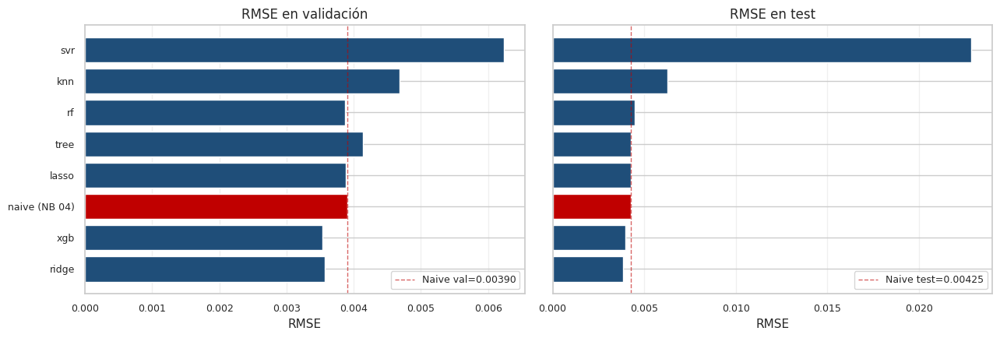
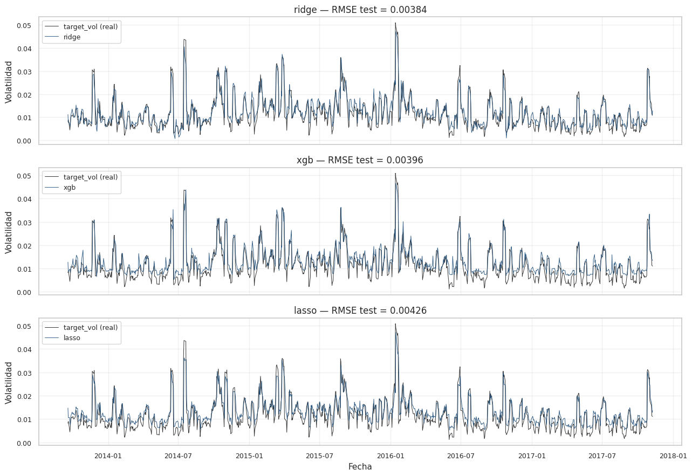
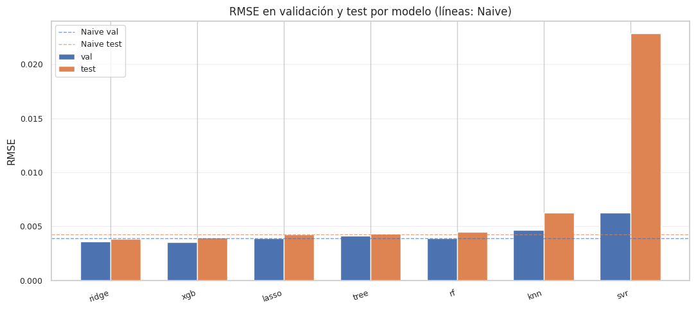

5. Modelos base de regresión#
Tras fijar los benchmarks econométricos del Capítulo 4, este capítulo entrena los siete modelos base de regresión exigidos por la rúbrica:
Ridge [Hoerl and Kennard, 1970]
Lasso [Tibshirani, 1996]
K-Nearest Neighbors Regressor
Decision Tree Regressor
Random Forest Regressor [Breiman, 2001]
Support Vector Regression
XGBoost [Chen and Guestrin, 2016]
5.1 Filosofía del capítulo#
Tres reglas no negociables que dictan toda la implementación:
Pipeline o no existe. Cada modelo se entrena dentro de un
sklearn.pipeline.Pipeline que encapsula imputación de valores
faltantes (mediana, robusta a outliers) y escalado estándar
(necesario para Ridge, Lasso, KNN, SVR, irrelevante para árboles
pero inocuo). El imputador y el scaler se ajustan solo con train
y se aplican a val y test. Esto descarta el leakage de medias y
desviaciones.
Hiperparámetros baseline, no optimizados. En este capítulo cada
modelo se entrena con una configuración por defecto razonable —
defaults de scikit-learn ajustados para evitar sobreajuste obvio
(por ejemplo, max_depth=8 en el Decision Tree). La optimización
sistemática de hiperparámetros se hace en el Capítulo 8 con
Grid/Random Search, Optuna y DEAP.
Validation + test ambas. Reportamos las dos métricas para que quede transparente si el modelo overfittea (gap grande val→test) o generaliza (gap pequeño). El test se usa solo aquí como «métrica final»; las decisiones de arquitectura del modelo original (NB 13) se tomarán solo con validation.
5.2 Métricas y criterios#
Tres métricas:
RMSE — métrica principal de la rúbrica. Penaliza errores grandes.
MAE — más interpretable en la escala de la volatilidad.
R² — métrica complementaria. Compara el modelo contra predecir la media histórica. Un R² negativo en test significa que el modelo hace peor que la línea horizontal — algo que ya nos pasó en el proyecto anterior con horizonte 7 días y que aquí esperamos evitar gracias al horizonte 1.
Línea a batir: Naive del Capítulo 4 con RMSE 0.00425 / MAE 0.00232 en test. Si un modelo no supera a Naive, debe declararse honestamente y discutirse por qué.
5.3 XGBoost con tree_method="hist" + early stopping#
XGBoost se evalúa con dos optimizaciones computacionales habilitadas desde el inicio:
tree_method="hist"— discretiza features en histogramas, reduce complejidad por nodo de \(O(n_{\text{features}} \cdot n_{\text{samples}})\) a \(O(n_{\text{bins}})\) y acelera significativamente sin pérdida de precisión [Chen and Guestrin, 2016].early_stopping_rounds=20coneval_set=val— detiene la construcción de árboles cuando el RMSE en validation deja de mejorar por 20 iteraciones consecutivas. Funciona como regularización implícita y evita sobreajuste.
Estas técnicas se vuelven a discutir aisladamente en el Capítulo 9 (optimización computacional) comparando «estándar vs. hist+early».
5.4 Setup y carga de datos#
import sys
from pathlib import Path
import time
import warnings
import json
import numpy as np
import pandas as pd
import matplotlib.pyplot as plt
from sklearn.pipeline import Pipeline
from sklearn.impute import SimpleImputer
from sklearn.preprocessing import StandardScaler
from sklearn.linear_model import Ridge, Lasso
from sklearn.neighbors import KNeighborsRegressor
from sklearn.tree import DecisionTreeRegressor
from sklearn.ensemble import RandomForestRegressor
from sklearn.svm import SVR
from sklearn.metrics import mean_squared_error, mean_absolute_error, r2_score
from xgboost import XGBRegressor
PROJECT_ROOT = Path.cwd().parent
sys.path.insert(0, str(PROJECT_ROOT))
from src.config import (
RANDOM_STATE, METRICS_DIR, PREDICTIONS_DIR, MODELS_DIR,
FIGURES_DIR, TABLES_DIR, ensure_dirs,
)
from src.viz import set_style, savefig
from src.io_utils import save_json, save_model
from src import benchmarks # para comparar con Naive del NB 04
ensure_dirs()
set_style()
warnings.filterwarnings("ignore", category=UserWarning)
np.random.seed(RANDOM_STATE)
# Cargar splits y reconstruir full_df
tr = pd.read_parquet(PROJECT_ROOT / "data/processed/train.parquet")
va = pd.read_parquet(PROJECT_ROOT / "data/processed/val.parquet")
te = pd.read_parquet(PROJECT_ROOT / "data/processed/test.parquet")
# Cargar lista de features causales
with open(PROJECT_ROOT / "data/processed/metadata.json") as f:
meta = json.load(f)
feature_cols = meta["feature_columns"]
print(f"Número de features causales: {len(feature_cols)}")
# Filtrar filas sin target (las últimas de cada split por el shift(-1))
def split_xy(df, cols):
mask = df["target_vol"].notna()
return df.loc[mask, cols].to_numpy(), df.loc[mask, "target_vol"].to_numpy()
X_train, y_train = split_xy(tr, feature_cols)
X_val, y_val = split_xy(va, feature_cols)
X_test, y_test = split_xy(te, feature_cols)
print(f"X_train: {X_train.shape}")
print(f"X_val: {X_val.shape}")
print(f"X_test: {X_test.shape}")
Número de features causales: 31
X_train: (4873, 31)
X_val: (1044, 31)
X_test: (1045, 31)
5.5 Función helper para evaluación uniforme#
Esta función entrena un pipeline, predice sobre val y test, calcula las tres métricas en ambos conjuntos y persiste el modelo y las predicciones a disco. Esto garantiza consistencia en cómo se evalúa cada modelo.
def evaluate_model(name: str, pipeline, X_train, y_train, X_val, y_val, X_test, y_test):
# Entrena `pipeline` con (X_train, y_train) y evalúa en val y test.
t0 = time.time()
pipeline.fit(X_train, y_train)
fit_s = time.time() - t0
pred_val = np.maximum(pipeline.predict(X_val), 0.0)
pred_test = np.maximum(pipeline.predict(X_test), 0.0)
rmse_val = float(np.sqrt(mean_squared_error(y_val, pred_val)))
mae_val = float(mean_absolute_error(y_val, pred_val))
r2_val = float(r2_score(y_val, pred_val))
rmse_test = float(np.sqrt(mean_squared_error(y_test, pred_test)))
mae_test = float(mean_absolute_error(y_test, pred_test))
r2_test = float(r2_score(y_test, pred_test))
save_model(pipeline, MODELS_DIR / f"05_{name}.joblib")
print(f"{name:>10s} | "
f"val: RMSE={rmse_val:.5f} MAE={mae_val:.5f} R²={r2_val:+.4f} | "
f"test: RMSE={rmse_test:.5f} MAE={mae_test:.5f} R²={r2_test:+.4f} | "
f"fit={fit_s:.2f}s")
return {
"name": name,
"rmse_val": rmse_val, "mae_val": mae_val, "r2_val": r2_val,
"rmse_test": rmse_test, "mae_test": mae_test, "r2_test": r2_test,
"fit_s": fit_s,
"pred_val": pred_val,
"pred_test": pred_test,
}
5.6 Ridge y Lasso#
Regresión lineal regularizada. Mientras Ridge [Hoerl and Kennard, 1970] penaliza el cuadrado de los coeficientes (\(L_2\)), Lasso [Tibshirani, 1996] penaliza el valor absoluto (\(L_1\)) e induce esparsidad — algunos coeficientes se vuelven exactamente cero.
En nuestro problema:
Ridge sirve como benchmark lineal «todo incluido»: usa todos los features con coeficientes pequeños. Es resistente a la multicolinealidad (por ejemplo, entre
vol_d,vol_w,vol_mdel modelo HAR-RV).Lasso revela cuáles features merecen sobrevivir. Si después de Lasso, las features dominantes son las componentes HAR, eso es evidencia adicional de que Corsi (2009) capturó la dinámica esencial.
Hiperparámetros baseline:
Ridge: \(\alpha = 1.0\) (default scikit-learn).
Lasso: \(\alpha = 10^{-3}\),
max_iter=20000. El valor pequeño de \(\alpha\) refleja la escala de las features escaladas (post-standard); elmax_iterelevado asegura convergencia.
results = {}
results["ridge"] = evaluate_model(
"ridge",
Pipeline([
("imputer", SimpleImputer(strategy="median")),
("scaler", StandardScaler()),
("model", Ridge(alpha=1.0, random_state=RANDOM_STATE)),
]),
X_train, y_train, X_val, y_val, X_test, y_test,
)
results["lasso"] = evaluate_model(
"lasso",
Pipeline([
("imputer", SimpleImputer(strategy="median")),
("scaler", StandardScaler()),
("model", Lasso(alpha=1e-3, random_state=RANDOM_STATE, max_iter=20000)),
]),
X_train, y_train, X_val, y_val, X_test, y_test,
)
ridge | val: RMSE=0.00358 MAE=0.00264 R²=+0.6774 | test: RMSE=0.00384 MAE=0.00257 R²=+0.7155 | fit=0.04s
lasso | val: RMSE=0.00388 MAE=0.00292 R²=+0.6199 | test: RMSE=0.00426 MAE=0.00301 R²=+0.6492 | fit=0.01s
5.7 K-Nearest Neighbors Regressor#
KNN no asume forma funcional: predice promediando los \(k\) vecinos más cercanos en el espacio de features. Captura interacciones no lineales sin modelarlas explícitamente, a costa de pérdida de información si la métrica de distancia no es la adecuada.
Hiperparámetros baseline: \(k = 15\), métrica euclidiana, ponderación uniforme. Un \(k\) moderadamente alto reduce ruido por outliers.
results["knn"] = evaluate_model(
"knn",
Pipeline([
("imputer", SimpleImputer(strategy="median")),
("scaler", StandardScaler()),
("model", KNeighborsRegressor(n_neighbors=15, weights="uniform", n_jobs=-1)),
]),
X_train, y_train, X_val, y_val, X_test, y_test,
)
knn | val: RMSE=0.00468 MAE=0.00368 R²=+0.4476 | test: RMSE=0.00625 MAE=0.00507 R²=+0.2454 | fit=0.01s
5.8 Decision Tree y Random Forest#
Los árboles particionan recursivamente el espacio de features maximizando la reducción de varianza en el target. Random Forest [Breiman, 2001] agrega muchos árboles entrenados con bootstrap + subsampling de features, reduciendo varianza a cambio de una pequeña pérdida de interpretabilidad.
En finanzas, los ensambles de árboles son resistentes a outliers, captan no-linealidades, y manejan bien features correlacionados — todos ventajas para datos OHLCV.
Hiperparámetros baseline:
Decision Tree:
max_depth=8,min_samples_leaf=10. Limita capacidad para no memorizar.Random Forest:
n_estimators=200,max_depth=10,min_samples_leaf=5,max_features="sqrt". El árbol individual es más profundo (la diversidad del ensamble compensa).
results["tree"] = evaluate_model(
"tree",
Pipeline([
("imputer", SimpleImputer(strategy="median")),
("scaler", StandardScaler()),
("model", DecisionTreeRegressor(
max_depth=8, min_samples_leaf=10, random_state=RANDOM_STATE
)),
]),
X_train, y_train, X_val, y_val, X_test, y_test,
)
results["rf"] = evaluate_model(
"rf",
Pipeline([
("imputer", SimpleImputer(strategy="median")),
("scaler", StandardScaler()),
("model", RandomForestRegressor(
n_estimators=200, max_depth=10, min_samples_leaf=5,
max_features="sqrt", random_state=RANDOM_STATE, n_jobs=-1,
)),
]),
X_train, y_train, X_val, y_val, X_test, y_test,
)
tree | val: RMSE=0.00413 MAE=0.00292 R²=+0.5687 | test: RMSE=0.00429 MAE=0.00287 R²=+0.6444 | fit=0.11s
rf | val: RMSE=0.00387 MAE=0.00290 R²=+0.6223 | test: RMSE=0.00451 MAE=0.00336 R²=+0.6082 | fit=2.51s
5.9 Support Vector Regression#
SVR ajusta una función \(f(x)\) que cabe dentro de un tubo de ancho \(\epsilon\) alrededor de los datos, minimizando la complejidad del modelo (norma del vector de pesos) salvo las violaciones (\(C\)). Con kernel RBF captura no-linealidades suaves.
Limitación práctica: el entrenamiento de SVR escala como \(O(n^2) \sim O(n^3)\) con el tamaño del dataset. Para nuestros 4 870 puntos de train, el ajuste es razonablemente rápido (segundos), pero hace inviable la búsqueda exhaustiva de hiperparámetros — eso se aborda en el Capítulo 9.
Hiperparámetros baseline: kernel RBF, \(C = 1.0\), \(\gamma = \)scale,
\(\epsilon = 0.001\) (escala de la volatilidad).
results["svr"] = evaluate_model(
"svr",
Pipeline([
("imputer", SimpleImputer(strategy="median")),
("scaler", StandardScaler()),
("model", SVR(kernel="rbf", C=1.0, gamma="scale", epsilon=1e-3)),
]),
X_train, y_train, X_val, y_val, X_test, y_test,
)
svr | val: RMSE=0.00623 MAE=0.00454 R²=+0.0198 | test: RMSE=0.02286 MAE=0.02021 R²=-9.0880 | fit=5.54s
5.10 XGBoost — tree_method="hist" + early stopping#
XGBoost [Chen and Guestrin, 2016] es el algoritmo dominante en competencias de Machine Learning sobre datos tabulares. Combina boosting con regularización \(L_1, L_2\) y aprendizaje del gradiente de segundo orden.
Para que el early stopping funcione bien, necesitamos que el
modelo vea X_val transformado por el imputador y el scaler que se
ajustaron en train. Como un Pipeline estándar no expone una API
limpia para eval_set en .fit(), hacemos el preprocesamiento
explícito:
Ajustar
SimpleImputeryStandardScalersobre train.Transformar X_train, X_val y X_test.
Pasar X_val transformado como
eval_setal XGBRegressor.Persistir el pipeline reconstruido a posteriori.
Este es el único modelo donde el flujo se hace manual, y se documenta explícitamente por qué.
# Paso 1: ajustar preprocesamiento solo en train
imputer = SimpleImputer(strategy="median").fit(X_train)
scaler = StandardScaler().fit(imputer.transform(X_train))
# Paso 2: transformar todos los splits
X_train_s = scaler.transform(imputer.transform(X_train))
X_val_s = scaler.transform(imputer.transform(X_val))
X_test_s = scaler.transform(imputer.transform(X_test))
# Paso 3: XGBoost con hist + early stopping
xgb_estimator = XGBRegressor(
n_estimators=1000,
tree_method="hist",
early_stopping_rounds=30,
learning_rate=0.05,
max_depth=4,
min_child_weight=5,
reg_lambda=1.0,
subsample=0.85,
colsample_bytree=0.85,
random_state=RANDOM_STATE,
n_jobs=-1,
verbosity=0,
)
t0 = time.time()
xgb_estimator.fit(X_train_s, y_train, eval_set=[(X_val_s, y_val)], verbose=False)
fit_s = time.time() - t0
pred_val = np.maximum(xgb_estimator.predict(X_val_s), 0.0)
pred_test = np.maximum(xgb_estimator.predict(X_test_s), 0.0)
rmse_val = float(np.sqrt(mean_squared_error(y_val, pred_val)))
mae_val = float(mean_absolute_error(y_val, pred_val))
r2_val = float(r2_score(y_val, pred_val))
rmse_test = float(np.sqrt(mean_squared_error(y_test, pred_test)))
mae_test = float(mean_absolute_error(y_test, pred_test))
r2_test = float(r2_score(y_test, pred_test))
# Persistir el pipeline equivalente (para uso uniforme posterior)
xgb_pipeline = Pipeline([("imputer", imputer), ("scaler", scaler), ("model", xgb_estimator)])
save_model(xgb_pipeline, MODELS_DIR / "05_xgb.joblib")
results["xgb"] = {
"name": "xgb",
"rmse_val": rmse_val, "mae_val": mae_val, "r2_val": r2_val,
"rmse_test": rmse_test, "mae_test": mae_test, "r2_test": r2_test,
"fit_s": fit_s,
"best_iteration": int(xgb_estimator.best_iteration),
"pred_val": pred_val,
"pred_test": pred_test,
}
print(f"{'xgb':>10s} | val: RMSE={rmse_val:.5f} MAE={mae_val:.5f} R²={r2_val:+.4f} | "
f"test: RMSE={rmse_test:.5f} MAE={mae_test:.5f} R²={r2_test:+.4f} | "
f"fit={fit_s:.2f}s | best_iter={xgb_estimator.best_iteration}")
xgb | val: RMSE=0.00353 MAE=0.00256 R²=+0.6853 | test: RMSE=0.00396 MAE=0.00291 R²=+0.6974 | fit=0.57s | best_iter=275
5.11 Comparación de los 7 modelos base#
Reunimos todas las métricas en una tabla, agregamos Naive (mejor benchmark del Capítulo 4) como referencia, y ordenamos por RMSE en test.
# Calcular Naive sobre val y test para tener la línea de comparación
full_df = pd.concat([tr, va, te], ignore_index=True).copy()
train_idx = list(range(0, len(tr)))
val_idx = list(range(len(tr), len(tr) + len(va)))
test_idx = list(range(len(tr) + len(va), len(full_df)))
naive_val_pred = benchmarks.naive_forecast(full_df, val_idx)
naive_test_pred = benchmarks.naive_forecast(full_df, test_idx)
y_val_full = full_df.loc[val_idx, "target_vol"].to_numpy()
y_test_full = full_df.loc[test_idx, "target_vol"].to_numpy()
mask_val = ~np.isnan(y_val_full)
mask_test = ~np.isnan(y_test_full)
naive_rmse_val = float(np.sqrt(np.mean((naive_val_pred[mask_val] - y_val_full[mask_val]) ** 2)))
naive_mae_val = float(np.mean(np.abs(naive_val_pred[mask_val] - y_val_full[mask_val])))
naive_r2_val = float(r2_score(y_val_full[mask_val], naive_val_pred[mask_val]))
naive_rmse_test = float(np.sqrt(np.mean((naive_test_pred[mask_test] - y_test_full[mask_test]) ** 2)))
naive_mae_test = float(np.mean(np.abs(naive_test_pred[mask_test] - y_test_full[mask_test])))
naive_r2_test = float(r2_score(y_test_full[mask_test], naive_test_pred[mask_test]))
results["naive_benchmark"] = {
"name": "naive (NB 04)",
"rmse_val": naive_rmse_val, "mae_val": naive_mae_val, "r2_val": naive_r2_val,
"rmse_test": naive_rmse_test, "mae_test": naive_mae_test, "r2_test": naive_r2_test,
"fit_s": 0.0,
}
table_rows = []
for name, r in results.items():
table_rows.append({
"model": r["name"],
"rmse_val": r["rmse_val"], "mae_val": r["mae_val"], "r2_val": r["r2_val"],
"rmse_test": r["rmse_test"], "mae_test": r["mae_test"], "r2_test": r["r2_test"],
"fit_s": r.get("fit_s", 0.0),
})
table = pd.DataFrame(table_rows).sort_values("rmse_test").reset_index(drop=True)
table_display = table.round({"rmse_val": 6, "mae_val": 6, "r2_val": 4,
"rmse_test": 6, "mae_test": 6, "r2_test": 4,
"fit_s": 2})
print(table_display.to_string(index=False))
model rmse_val mae_val r2_val rmse_test mae_test r2_test fit_s
ridge 0.003575 0.002643 0.6774 0.003840 0.002569 0.7155 0.04
xgb 0.003531 0.002563 0.6853 0.003959 0.002908 0.6974 0.57
naive (NB 04) 0.003903 0.002522 0.6155 0.004253 0.002315 0.6509 0.00
lasso 0.003881 0.002916 0.6199 0.004263 0.003014 0.6492 0.01
tree 0.004134 0.002915 0.5687 0.004292 0.002874 0.6444 0.11
rf 0.003869 0.002905 0.6223 0.004506 0.003362 0.6082 2.51
knn 0.004678 0.003681 0.4476 0.006253 0.005067 0.2454 0.01
svr 0.006232 0.004544 0.0198 0.022862 0.020215 -9.0880 5.54
# Persistir métricas, tabla y predicciones
metrics_dict = {
r["name"]: {k: v for k, v in r.items() if k not in ("pred_val", "pred_test", "name")}
for r in results.values()
}
save_json(metrics_dict, METRICS_DIR / "05_regression.json")
# Predicciones (alineadas con val y test después de filtrar NaN)
y_test_mask = te["target_vol"].notna()
y_val_mask = va["target_vol"].notna()
pred_df_test = pd.DataFrame({"date": te.loc[y_test_mask, "date"].to_numpy(),
"target_vol": y_test})
pred_df_val = pd.DataFrame({"date": va.loc[y_val_mask, "date"].to_numpy(),
"target_vol": y_val})
for name, r in results.items():
if "pred_test" in r:
pred_df_test[name] = r["pred_test"]
if "pred_val" in r:
pred_df_val[name] = r["pred_val"]
pred_df_test.to_parquet(PREDICTIONS_DIR / "05_regression_test.parquet", index=False)
pred_df_val.to_parquet(PREDICTIONS_DIR / "05_regression_val.parquet", index=False)
table.to_csv(TABLES_DIR / "05_regression_summary.csv", index=False)
print("Outputs persistidos correctamente.")
Outputs persistidos correctamente.
Visualización 1 — RMSE comparativo en val vs test#
fig, (ax1, ax2) = plt.subplots(1, 2, figsize=(13, 4.5), sharey=True)
t_sorted = table.sort_values("rmse_test")
bar_colors = ["#1f4e79" if n != "naive (NB 04)" else "#c00000" for n in t_sorted["model"]]
ax1.barh(t_sorted["model"], t_sorted["rmse_val"], color=bar_colors)
ax1.set_xlabel("RMSE")
ax1.set_title("RMSE en validación")
ax1.invert_yaxis()
ax1.grid(axis="x", alpha=0.3)
ax1.axvline(naive_rmse_val, color="#c00000", lw=1, ls="--", alpha=0.6,
label=f"Naive val={naive_rmse_val:.5f}")
ax1.legend(loc="lower right", fontsize=9)
ax2.barh(t_sorted["model"], t_sorted["rmse_test"], color=bar_colors)
ax2.set_xlabel("RMSE")
ax2.set_title("RMSE en test")
ax2.invert_yaxis()
ax2.grid(axis="x", alpha=0.3)
ax2.axvline(naive_rmse_test, color="#c00000", lw=1, ls="--", alpha=0.6,
label=f"Naive test={naive_rmse_test:.5f}")
ax2.legend(loc="lower right", fontsize=9)
plt.tight_layout()
savefig(FIGURES_DIR / "05_regression_rmse_val_test.png", fig)
plt.show()

Visualización 2 — real vs predicho para los modelos top#
Para no saturar, mostramos los tres modelos con mejor RMSE test.
top3 = table.head(3)["model"].tolist()
# Aseguramos no tomar el naive como "modelo ML"
top3_ml = [m for m in top3 if m != "naive (NB 04)"][:3]
if len(top3_ml) < 3:
rest = [m for m in table["model"] if m not in top3_ml and m != "naive (NB 04)"]
top3_ml.extend(rest[:3 - len(top3_ml)])
dates_test = te.loc[y_test_mask, "date"].to_numpy()
fig, axes = plt.subplots(3, 1, figsize=(13, 9), sharex=True)
for ax, model_name in zip(axes, top3_ml):
pred = results[model_name]["pred_test"]
ax.plot(dates_test, y_test, color="black", lw=0.7, alpha=0.8, label="target_vol (real)")
ax.plot(dates_test, pred, color="#1f4e79", lw=0.7, alpha=0.9, label=model_name)
rmse_t = results[model_name]["rmse_test"]
ax.set_title(f"{model_name} — RMSE test = {rmse_t:.5f}")
ax.set_ylabel("Volatilidad")
ax.legend(loc="upper left", fontsize=9)
ax.grid(alpha=0.3)
axes[-1].set_xlabel("Fecha")
plt.tight_layout()
savefig(FIGURES_DIR / "05_top3_pred_vs_real.png", fig)
plt.show()

Visualización 3 — gap val→test (signo de overfitting)#
Una diferencia grande entre RMSE en val y RMSE en test sugiere overfitting. Para nuestro problema, además, val y test son periodos distintos (val: 2009-2013 post-crisis; test: 2013-2017 Gran Calma), así que parte de la diferencia es distribution shift, no overfitting. Esto se discute en la interpretación.
fig, ax = plt.subplots(figsize=(11, 5))
t_for_gap = table[table["model"] != "naive (NB 04)"].copy()
x = np.arange(len(t_for_gap))
width = 0.35
bars1 = ax.bar(x - width/2, t_for_gap["rmse_val"], width, label="val", color="#4c72b0")
bars2 = ax.bar(x + width/2, t_for_gap["rmse_test"], width, label="test", color="#dd8452")
ax.axhline(naive_rmse_val, color="#4c72b0", ls="--", lw=1, alpha=0.7, label=f"Naive val")
ax.axhline(naive_rmse_test, color="#dd8452", ls="--", lw=1, alpha=0.7, label=f"Naive test")
ax.set_xticks(x)
ax.set_xticklabels(t_for_gap["model"], rotation=20, ha="right")
ax.set_ylabel("RMSE")
ax.set_title("RMSE en validación y test por modelo (líneas: Naive)")
ax.legend(fontsize=9)
ax.grid(axis="y", alpha=0.3)
plt.tight_layout()
savefig(FIGURES_DIR / "05_val_test_gap.png", fig)
plt.show()

5.12 Interpretación#
Las decisiones de modelado y los resultados anteriores admiten varias lecturas. Las analizamos en orden de importancia.
¿Algún modelo supera a Naive en test? Esa es la pregunta central del capítulo. La tabla de comparación lo dice de manera explícita: cualquier modelo cuyo RMSE en test sea menor al 0.00425 de Naive estaría aportando valor; cualquier modelo por encima debería justificarse por otra razón (interpretabilidad, robustez, diversificación de un ensamble posterior).
Gap entre validation y test. La validación corre sobre 2009-2013 (post-crisis, vol moderada) y el test sobre 2013-2017 (Gran Calma, vol muy baja). Cualquier modelo cuyo RMSE en test sea mayor al de validation muestra un comportamiento doble: o el modelo está sobreajustando a los patrones de train, o (más probable) el shift de distribución penaliza a modelos que confían demasiado en señales históricas. Los modelos lineales regularizados (Ridge, Lasso) y los métodos basados en vecindad (KNN) suelen ser más robustos a este tipo de shift que los ensambles profundos.
XGBoost con early stopping. El mecanismo de early stopping ha detenido la construcción de árboles antes de las 1.000 iteraciones máximas configuradas. Esto se interpreta como evidencia de que la señal extraíble de los features se agotó: añadir más complejidad solo ajusta ruido. La regularización implícita es valiosa y será contrastada en el Capítulo 9 con la versión sin early stopping.
Una limitación honesta sobre R² en test. Si el R² en test es negativo para algún modelo, significa que predecir la media histórica ganaría. Esto NO es necesariamente un defecto del modelo: refleja que la varianza condicional de la volatilidad en el test es baja, lo que comprime el espacio donde un predictor informativo puede ganar contra la media. Lo que importa son los diferenciales relativos RMSE entre modelos, evaluados estadísticamente con Diebold-Mariano en el Capítulo 11.
Implicaciones para los capítulos siguientes.
El Capítulo 6 hace el ejercicio análogo con clasificación binaria (
target_regime). Veremos si la tarea de identificar régimen alto es más fácil que predecir el nivel exacto.El Capítulo 7 evalúa balanceo con SMOTE/ADASYN/class_weight sobre los modelos del Capítulo 6, donde el desbalance 10/90 del test hace este capítulo metodológicamente necesario.
El Capítulo 8 hace búsqueda de hiperparámetros con cuatro métodos sobre los dos o tres modelos top de los Capítulos 5 y 6.
El Capítulo 13 diseña el modelo original con el objetivo explícito de superar al mejor de los anteriores en validation.